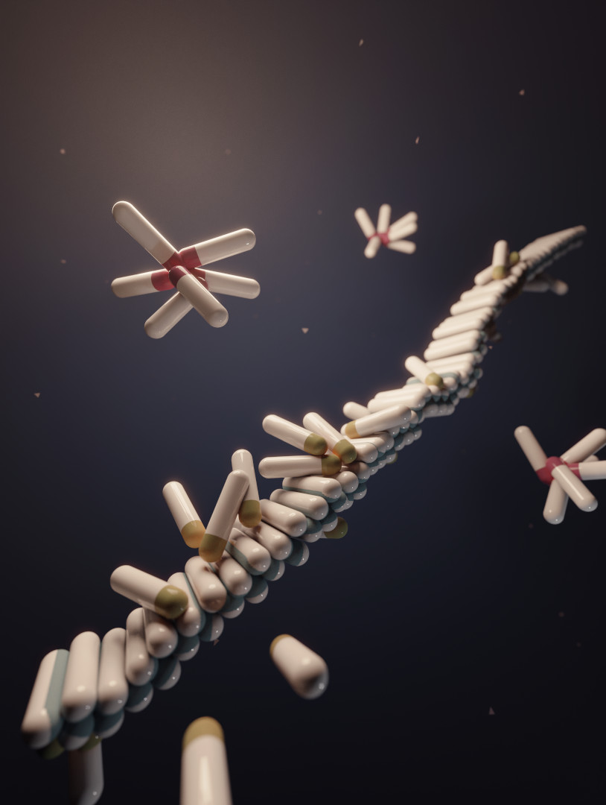
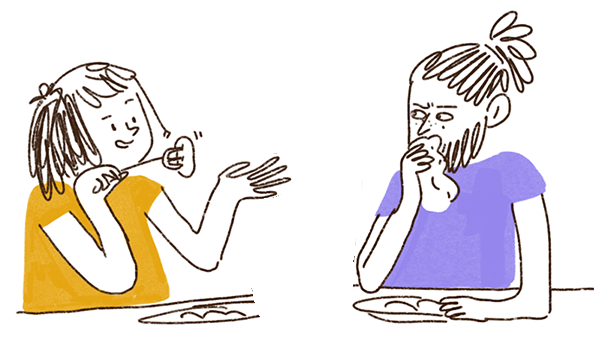

I'm Nicola De Mitri *
I live in Cambridge, UK, and I'm a scientific software developer at Enthought. I have a BS and MS in Physics from the University of Pisa, and a PhD in Chemistry from Scuola Normale Superiore.
I work with Python on projects aimed at better management, visualisation and computation of data; I'm currently focusing on the life sciences domain.
research

pdf 14 MB
Publications see on Google Scholar
Campetella, M., De Mitri, N. & Prampolini, G. (2020). Automated parameterization of quantum-mechanically derived force- fields including explicit sigma holes: A pathway to energetic and structural features of halogen bonds in gas and condensed phase. The Journal of Chemical Physics, 153(4), 044106
Weber, J., Bollepalli, L., Belenguer, A., Di Antonio, M., De Mitri, N., Joseph, J., Balasubramanian, S., Hunter, C. & Bohndiek, S. (2019). An activatable cancer-targeted hydrogen peroxide probe for photoacoustic and fluorescence imaging. Cancer Research, August 27 2019 DOI: 10.1158/0008-5472.CAN-19-0691
Belenguer, A. M., Lampronti, G. I., De Mitri, N., Driver, M., Hunter, C. A., & Sanders, J. K. (2018). Understanding the influence of surface solvation and structure on polymorph stability: a combined mechanochemical and theoretical approach. Journal of the American Chemical Society, 140(49), 17051-17059.
Pagliai, M., Mancini, G., Carnimeo, I., De Mitri, N., & Barone, V. (2017). Electronic absorption spectra of pyridine and nicotine in aqueous solution with a combined molecular dynamics and polarizable QM/MM approach. Journal of computational chemistry, 38(6), 319-335.
Prampolini, G., Campetella, M., De Mitri, N., Livotto, P. R., & Cacelli, I. (2016). Systematic and automated development of quantum mechanically derived force fields: The challenging case of halogenated hydrocarbons. Journal of chemical theory and computation, 12(11), 5525-5540.
Salvadori, A., Licari, D., Mancini, G., Brogni, A., De Mitri, N., & Barone, V. (2014). Graphical interfaces and virtual reality for molecular sciences. Reference Module in Chemistry, Molecular Sciences and Chemical Engineering (chapter of), Elsevier.
Prampolini, G., Monti, S., De Mitri, N., & Barone, V. (2014). Evidences of long lived cages in functionalized polymers: Effects on chromophore dynamic and spectroscopic properties. Chemical Physics Letters, 601, 134-138.

see at publisher
De Mitri, N., Prampolini, G., Monti, S., & Barone, V. (2014). Structural, dynamic and photophysical properties of a fluorescent dye incorporated in an amorphous hydrophobic polymer bundle. Physical Chemistry Chemical Physics, 16(31), 16573-16587.
De Mitri, N., Monti, S., Prampolini, G., & Barone, V. (2013). Absorption and emission spectra of a flexible dye in solution: A computational time-dependent approach. Journal of chemical theory and computation, 9(10), 4507-4516.
Barone, V., Cacelli, I., De Mitri, N., Licari, D., Monti, S., & Prampolini, G. (2013). Joyce and Ulysses: integrated and user-friendly tools for the parameterization of intramolecular force fields from quantum mechanical data. Physical Chemistry Chemical Physics, 15(11), 3736-3751.
Lipparini, F., Cappelli, C., Scalmani, G., De Mitri, N., & Barone, V. (2012). Analytical first and second derivatives for a fully polarizable QM/classical hamiltonian. Journal of chemical theory and computation, 8(11), 4270-4278.
3D graphics
I mostly do it as a hobby...


but I've also been commissioned scientific illustrations (thanks Anđela Šarić for the publicity!)

Not selected for the journal cover 😞
{kind=link}

Featured on the journal cover: see at publisher.
I worked with Claudia on this one!

Featured on the journal cover: see at publisher.
Speaking of those: I can't take any more of these commissions but I like having weekend projects. So if you've got a cover-worthy manuscript, you have zero budget, and you're happy with not knowing whether I'll even complete it, let alone do it on time, you can ask me for a free cover art! Email below.
You can find more (including videos) at Artstation or on Instagram.
me elsewhere
In case you need me, I'm nicola · dmt ∝ gmail · com.
Thoughts about communication and science communication, excitement about technology advances and space exploration, rants about Italian – with a pinch of British – politics, can be found in two versions: unrestricted or bound to 280 chars.
I hang out on StackExchange sometimes, mostly for Blender Q&A. I would like to pick up code-golfing at some point...
Here is when I thought photography was going to be my hobby, or even a income supplement 😂 (spoiler: it takes much more than that).
Here's my account on the Italian language Wikipedia. I've even been an elected admin briefly (maybe the shortest-lived ever); but now the account is almost abandoned 😢. Back in the days, it has been my personal gateway to online communities, a school of life on many subjects: freedom, openness, consensus, IP laws.
These and other accounts in the row below
friends
Claudia is a cartoonist and a science illustrator. A very good one, if you ask me!
{kind=link}

We moved to Cambridge together ❤ some years ago, and it worked out fine, even though this summer I have fatally overwatered her loved Echeveria 🙄.
My latest research group was not only a great place to do research, but also a place full of enjoyable people: the "Hunters". Giulia is a great social media manager and keeps our shared memories organised.
The Internet was invented for math researchers to publish their academic pages. This is probably fake news. As it turns out, and this is not fake news, many of my friends are math researchers: Giulia Cervia, Daniele Celoria, Agnese Barbensi, Paolo Aceto, ...
...Roberto Pirisi. But this shouldn't be his only web site. A second, non academic, one is long overdue, and it's my fault 😖: I haven't forgotten, I promise.
Speaking of mathematicians, have I mentioned that my dad is one of them? He's even the first I've ever met!
Both Chiara Satta and I live in Cambridge, love mirto, and are worried about issues with society. But she channels her worry into interesting long reads rather than rants. Good on her!
Back in 2009, Luigi Renna went to New York for a research internship and turned his experience into a popular blog. Now he can afford a 2LD and has just started a technical blog at luigi.io.
A living example that it's possible to take a 8 year long break from academia then go back: Armando Carlone is now living his best life it in the lab he's put together in L'Aquila. I really hope his collaborators like dad jokes, though!
Although we have been friends since boyhood, we've never really talked about our shared passion for computer graphics back then. But Emanuele Maggio was taking it way more seriously and look at him now!
Francesco Caravelli moves across the continents at an incredible pace, so it's just been by chance that we've lived in the same place twice! It's impossible to summarise what he does so I'll let him do it.
In addition to making dirty jokes, dreaming about Japan, and being a proud Sardinian, Aurora Cacciapuoti is also a funny author and illustrator.